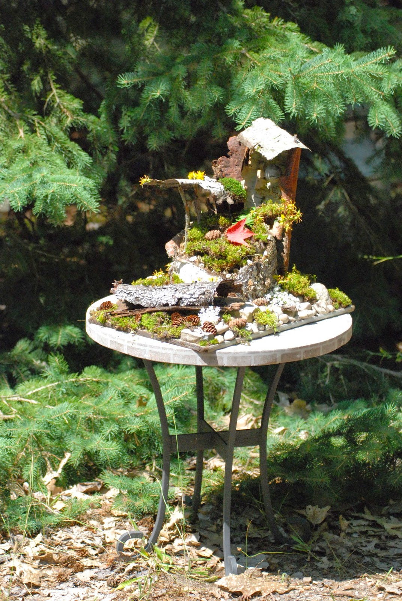
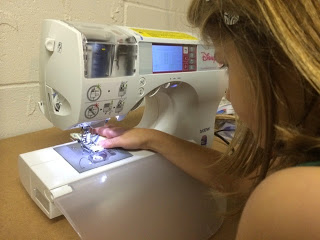

3D Cookie Cutter app comparison
My oldest daughter is in her second year of Brownies. My wife and I volunteered to lead a couple of their meetings with a maker theme. I thought the 3D printer is always a hit and what better project for girl scouts than cookies (yes I realize this is cliche …
read more2014-12-16 HPCC workshop slides and handouts
Blog post edited by Anonymous
I will be teaching my bi-annual Introductory and Advanced HPCC workshops tomorrow. Below are links to my updated slides and handouts. Registration looks lite so feel free to drop in if you have the time. These workshops are being provided as part of IT Services …
read more2014-12-05 Western Michigan University, Introduction to iCER slides
Fairy House

Over the summer we spent some time up at our Aunt and Uncle's cottage. Kids were picking up a lot of nature detritus to "keep" and my wife got the idea to make a Fairy House. Turned out to be a really fun project. I particularly like the paper lantern …
read moreLearning to use a sewing and embroidering machine

We are trying to turn our basement into a mini makerspace for the kids. Quite a few years ago my wife bought a fancy sewing machine that does embroidery which I thought would make a fun addition. My eldest daughter and I got playing with the machine and it is …
read moreLithophanes
I saw my first 3D printer when I was visiting the University of Notre Dame. It was over 10 years ago, it was fairly expensive to operate and it printed in a kind of expensive wax.
Anyway, this was the first time I saw a lithophane. It was a picture …
read moreSnowflake Lithophane

There is something magical about looking at a lithophane. I like handing them to people with the light coming from the front. Most of the time they are polite and say, "that's nice." Then I have them hold the lithophane to let the light come in from the back and …
read morezsh job number autocomplete
Blog post edited by Anonymous - "Migration of unmigrated content due to installation of a new plugin"
We do not directly support zsh users on our system. However, many of our more advanced users enjoy some of the modern and advanced features provided by zsh. One of these users shared a …
read more2014-05-07: Workshop on Managing, Sharing and Moving Big Data
Blog post edited by Camille Archer
This is a new workshop being provided as part of IT Services two day offering of no-charge seminars to faculty and graduate students on technology topics on May 7. More information and registration can be done at the following website:
read moreRestart Stalled Programs
Page edited by Camille Archer - "Migration of unmigrated content due to installation of a new plugin"
 Hack to automatically restart programs that stall during
inicialization
Hack to automatically restart programs that stall during
inicialization
Unknown User (colbrydi@msu.edu) posted on Jan 16, 2015
Sometimes we get jobs that stall out right at the beginning but do not error …
read more